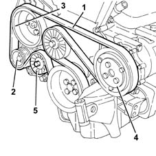
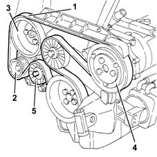
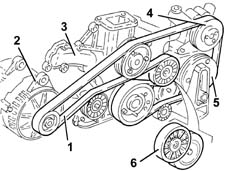
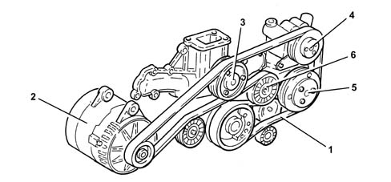
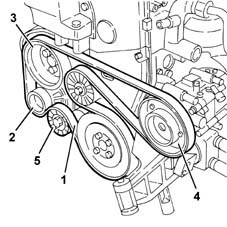
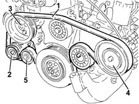
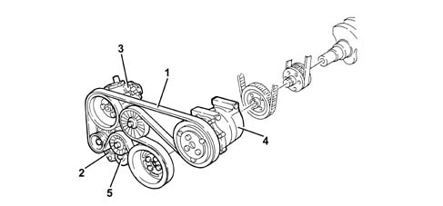

1092G single drive belt for various engine components
- Path
- Descriptions > 10 ENGINE > 1092 VARIOUS ENGINE COMPONENT CONTROLS > 1092G single drive belt for various engine components
- Kind
- system description
- Applies to
- all engines; all production periods
- Interactive page
- https://sloeber94.github.io/elrnDB-a156/en/#/3232866
Applies to: engines: 1.6 TS , 1.8 TS; all production periods
The Poly-V type belt (1) drives the alternator (2), the power assisted steering pump (3) and, where fitted, the air conditioning compressor (4).
There is an automatic tensioner (5) which means that there are no planned maintenance operations.

Applies to: all engines; all production periods
The Poly-V type belt (1) drives the alternator (2), the power assisted steering pump (3) and, where fitted, the air conditioning compressor (4).
There is an automatic tensioner (5) which means that there are no planned maintenance operations.
10148B

Applies to: engines: 2.5 V6; all production periods
The Poly-V type belt (1) drives the alternator (2), the water pump (3), power assisted steering pump (4) and, where fitted, the air conditioning compressor (5).
There is an automatic tensioner (6) which means that there are no planned maintenance operations.

Applies to: engines: 3.2 V6; all production periods
CONSTRUCTION FEATURES
Poly-V type (1); drives the alternator (2), water pump (3), power steering pump (4) and air conditioning compressor (5).
There is an automatic tensioner (6) which means that there are no tensioning operations.

Applies to: engines: 1.9 JTD 8v ; all production periods
The Poly-V type belt (1) drives the alternator (2), the power assisted steering pump (3) and, where fitted, the air conditioning compressor (4).
There is an automatic tensioner (5) which means that there are no planned maintenance operations.

Applies to: engines: 2.4 JTD 10v; all production periods
The Poly-V type belt (1) drives the alternator (2), the power assisted steering pump (3) and, where fitted, the air conditioning compressor (4).
There is an automatic tensioner (5) which means that there are no planned maintenance operations.

Applies to: engines: 2.0 JTS, 2.0 JTS; all production periods
CONSTRUCTION FEATURES
The poly-V type belt (1) drives the alternator (2), the power assisted steering pump (3) and the air conditioning compressor (4).
There is an automatic tensioner (5) which means that there are no planned maintenance operations.
